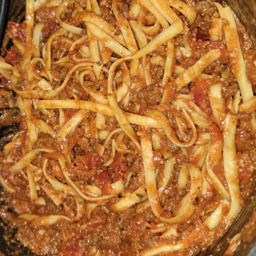

One-Pot Spaghetti and Meat Sauce

Description
This is a delicious recipe for spaghetti and a meat sauce that you can cook all in one pot! Cook and prep time will take approximately 40 minutes, and ingredients included are to serve 4.
Ingredients
- 2 cups water
- 1 small diced onion
- 1 pound Ground Sausage
- 4 cloves minced garlic
- 26 oz tomato pasta sauce
- 1 teaspoon italian seasoning
- 8 oz of spaghetti noodles broken in half
- 1/2 cup grated Parmesan
Steps
- Combine sausage, onion, and garlic in a large pot or tall skillet. Cook on medium heat until thoroughly cooked, about 6 to 8 minutes. Drain excess grease from the pot.
- Add the pasta sauce, water, and seasoning into the pot and stir. Bring to a boil, then add the noodles. continue cooking and stirring occasionally, until the noodles are done and the sauce has thickened, generally about 15 to 20 minutes.
- Serve in a bowl and top with the Parmesan. Enjoy!